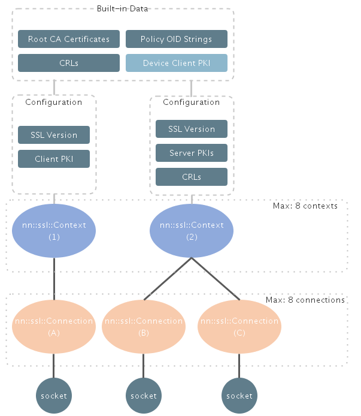

Working with classes in the SSL library
The SSL library offers classes and interfaces to read/write over SSL/TLS connection backed by TCP/IP connection to securely communicate with servers. There are two notable class representations below.
- nn::ssl::Context
- nn::ssl::Connection
To establish a SSL connection, a user of the SSL library is required to create a nn::ssl::Context object first. Configuration of the nn::ssl::Context object may be done prior to creating a nn::ssl::Connection object.
Once the nn::ssl::Context object is created, a nn::ssl::Connection may be created. It is not possible to create a nn::ssl::Connection objectwithout a nn::ssl::Context object because the Create() method of the nn::ssl::Connection requires a pointer to the nn::ssl::Context object to be passed.
Note that there is a distinction between creation and instantiation of a nn::ssl::Context/nn::ssl::Connection object. When the documentation says "create", it means calling the Create() method of the nn::ssl::Context/nn::ssl::Connection object. Thus it is possible to instantiate a nn::ssl::Connection object without a nn::ssl::Context object.
The below diagram shows hierarchy of classes and entities in the SSL library. Please refer to it in conjunction with description of nn::ssl::Context and nn::ssl::Connection below.

Fig1. SSL Library objects hierarchy
nn::ssl::Context
This class represents the context of SSL. The context is used to maintain configuration parameters which are used when creating SSL connections under the context. For example, the version of the SSL protocol used to establish a SSL connection by nn::ssl::Connection is determined by the configuration in the SSL context.
Certificates, keys and CRLs to be used for SSL communication are also managed by this class. The user of the SSL library may import zero or more trusted certificate authority certificates to verify the peer certificate. A client cert and its private key may be imported if the server performs client certificate verification.
There is also built-in data (e.g. root CA certificates) that is used implicitly by all nn::ssl::Context objects; thus the user is not required to import any root CA certificates that are included in the built-in data.
Please refer to the following page for further details about built-in entities.
To understand more about handling certificates and keys, please refer to the following page.
Please refer the API reference of nn::ssl::Context for further details.
Limitations
- An application can create maximum up to 8 SSL contexts concurrently
- Entities (e.g. certificates and keys) imported on a nn::ssl::Context object are not persistent
- Such entities are not available once the object is destroyed (or instance of the object is freed)
- Only one client PKI can be imported per a nn::ssl::Context object
nn::ssl::Connection
This represents the connection of SSL. One instance of the class is in charge of managing one SSL connection based on TCP/IP socket. Each connection is tied to the specific nn::ssl::Context object and necessary configuration parameters to configure SSL connection are obtained from it.
I/O operations to perform data read/write and SSL handshake are provided by methods in this class. It supports both blocking as well as non-blocking API which can be configured by nn::ssl::Connection::SetIoMode().
Working with the Socket library
The SSL library is in charge of handling SSL/TLS protocols though it doesn't deal with socket creation and TCP/IP connection establishment. Prior to performing SSL handshake, the user of the SSL library is required to create a TCP socket and establish connection on the socket by using the socket library.
Importing a socket descriptor
After TCP connection is established, the socket descriptor needs to be passed to the SSL library. The SSL library performs SSL handshake and encrypted data transfer on the passed socket once SSL handshake succeeds.
Please note that it is not allowed to perform any socket operation on the passed socked to the SSL library once it is successfully passed. Any following operation needs to be performed by interfaces provided by the SSL library.
Socket closure
When the corresponding socket is not used anymore (e.g. SSL connection is closed), it is closed by the SSL library automatically. It is also closed automatically when the SSL connection is destroyed by nn::ssl::Connection::Destroy if it's not closed yet at the moment. Hence the caller is not required to deal with any socket operation including closing it once it is passed to the SSL library.
Here is the rough sequence described above:
- Create TCP client socket by the socket API
- Establish TCP connection with the server on the created socket (resolve the name if necessary before establishing TCP connection)
- Pass the socket descriptor to the SSL library through the interface provided in nn::ssl::Connection class (at this point, the passed socket should not be used with the socket library anymore)
- Performs any SSL operation with the SSL library
- Closes SSL connection through the interface provided in nn::ssl::Connection class
SSL handshake
SSL handshake attempt is made only after nn::ssl::Connection::Handshake() is called. The SSL library verifies a server during SSL handshake based on CA certificates which is managed by the nn::ssl::Context object tied to the nn::ssl::Connection object. If nothing is imported on the nn::ssl::Context object, server validation is performed only with the built-in root CA certificates.
The SSL library supports session resumption. By default, session cache data is created when SSL handshake succeeds by session ID method. If there is the session cache data which can be used for new SSL handshake attempt, the SSL library automatically use it.
Please refer the API reference of nn::ssl::Connection for further details.
Limitations
- An application can create maximum up to 8 SSL connections concurrently
CONFIDENTIAL